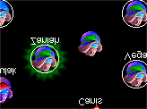
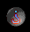
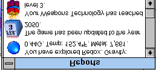

The Windows
Spaceward Ho! has three windows. You can drag the windows around and resize them how you like, so you can configure the game for your monitors and style of play. Spaceward Ho! automatically saves your window configuration when you quit and restores it the next time you play, so you don't have to keep fooling with it.
The Main Window
The Main Window is the only really important window in Spaceward Ho!. It contains the Star Map, along with all the budget, planet, and fleet information. The window's title bar will say something like, "Peter in Milky Way in 2000," which means you're currently registered as Peter in the game "Milky Way" in the year 2000.
The Star Map
The right part of the main window of Spaceward Ho! is the Star Map. It lets you see where you are, where you've been, where you can go. You use the Star Map to move ships (by clicking and dragging from one star to another) and to choose which planet to look at and deal with.
There are several types of stars you'll see in the Star Map. For now, we'll just explain the kinds you can see at the very beginning of a game.
Your Home Planet

This is where you live. It's a heavily populated, highly profitable, technologically advanced planet ready to go out and explore the universe. You'll build your first ships here.
An Unexplored Planet

At the start of the game, everything but your home planet is unexplored. Once you go to a planet, you'll find out more about it, and its picture will change to reflect your new discoveries. The rest of the types of planets will be covered later, in the "Planets" chapter.
A Selected Planet
When you select a planet, it highlights by getting a corona around it. All the information to the left of the star map will now refer to that planet—its temperature, gravity, income, and so on.
Messages & The Report Window

The Report Window is a scrolling history of all the important things that have happened in the game over the last several turns. Each message will appear in the lower left hand corner of the Star Map at the beginning of each turn. When you click on the message, it will go on to the next one. When you've read all the messages, an "End Turn" button will appear in the top left corner of the map.
There are many different kinds of messages. When you explore a star, you'll get a message about the star's temperature and gravity. When you colonize a planet, you'll get a friendly notice. When you're in a battle, you'll get a message summarizing the result.
You can click on an old message in the Report Window to get further information. For example, when you click on a battle summary, Spaceward Ho! will replay the battle. When you click on a message mentioning a planet, you'll scroll the map to that planet and select it.